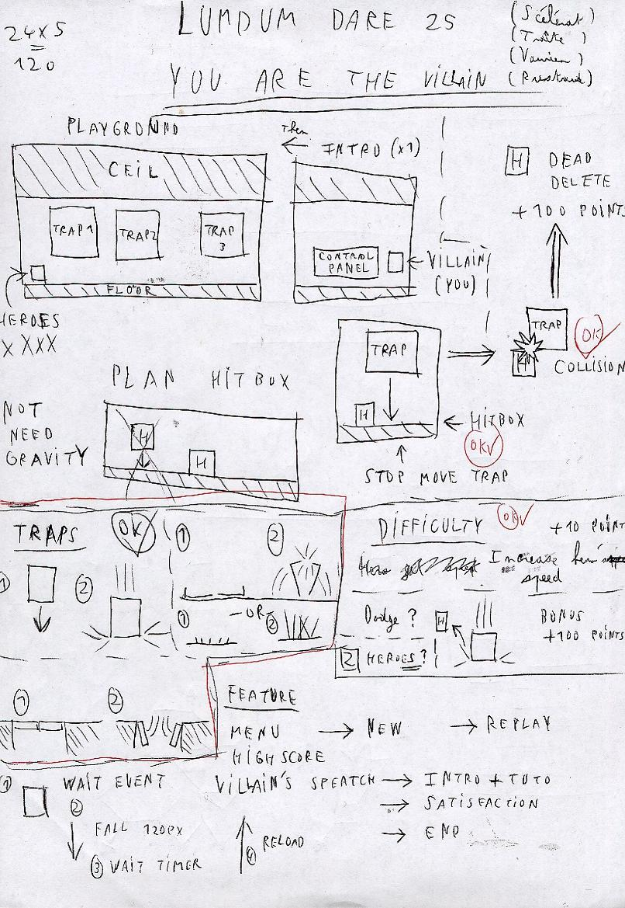
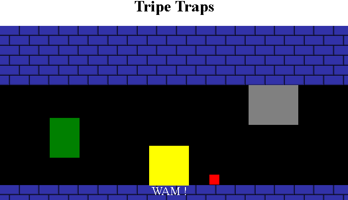
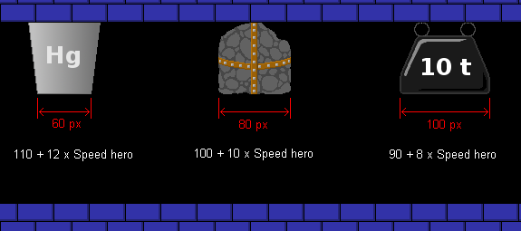
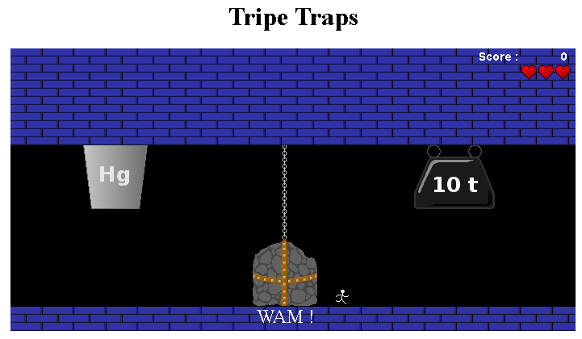

Compte-rendu de Ludum Dare #25
Eh oui ! Cette fois, c'est moi, Lyonsbanner (à votre service), qui vous présenterai le compte-rendu de la 25ème édition du Ludum Dare qui s'est déroulé du 14 au 17 décembre. Vous pouvez retrouver tous les comptes-rendus précédent dans une nouvelle catégorie « Ludum Dare ». Pour ceux qui ne connaissent pas le principe, il s'agit d'un week-end pendant lequel des développeurs du monde entier créent des jeux sur un thème imposé. Les participations peuvent se faire soit en 48 heures en solo (la compétition ou compo), soit en groupe en 72 heures (le jam).
L'année 2012 a été plus que fructueuse, car il y a eu un total de 4651 jeux qui ont été réalisés dont 1327 pour cette 25ème édition. C'est énorme ! D'autant plus qu'à l'heure actuelle l'ensemble des jeux Ludum Dare depuis la première édition a dépassé le nombre total des jeux sur consoles toutes catégories confondues. Parmi tous les participants, j'étais dans le lot et cet article retracera mon parcours.
Malgré mon expérience en tant que développeur d'application, je n'étais pas très à l'aise face à la réalisation d'un jeu en temps limité. À vrai dire, je n'avais pas de « vrais » outils à ma disposition pour créer un jeu vidéo, juste quelques connaissances avec Canvas que j'ai découvert lors du Microsoft Days' 11. Je n'étais pas sûr de présenter quelque chose et finalement, je me suis dis que dans le pire des cas, j'aurais au moins participé. D'ailleurs, une des particularité du Ludum Dare est d'aider les participants à être in the move, et ça quelque part, c'est très motivant !
N'étant pas habitué aux nuits blanches, plutôt que d'attendre l'annonce du thème à quatre heures du matin, j'ai décidé de recharger mes batteries afin d'être d'attaque le lendemain, ce qui est d'ailleurs fortement recommandé par les organisateurs même si la plupart préfère déroger à la règle. C'est alors qu'est apparu sous mes yeux ébahis le thème de cette édition : « You are the Villain ». En français, on peut le traduire par « Vous êtes le Scélérat, le Traitre, le Vaurien, le Rustaud », bref, il fallait donc que je réalise un jeu où le joueur joue le rôle du méchant, un peu comme l'excellent Dungeon Keeper. Après avoir pris connaissance du thème en long, en large et en travers… je sors faire une promenade afin de méditer sur mon projet et de trouver des idées (ça aussi ça fait parti des recommandations).
Et c'est parti !
De retour chez moi, j’attrape ma planche à écrire et en cinq minutes, je jette sur le papier des notes sur les éléments de jeu, le gameplay ainsi que les théories sur les événements comme les collisions et le système de scoring. Voyez plutôt :

Le concept est simple : le joueur a à sa disposition des pièges qu'il doit activer afin d'empêcher le héros de sortir par la droite de l'écran. Chaque fois que le joueur réduit le héros à l'état de pizza, il gagne des points, si ce dernier atteint la droite de l'écran, le joueur perd un cœur. Quant au titre, j'ai choisi « Tripe Traps » : je n'étais pas très inspiré, mais au moins les deux mots commencent par un T et ont chacun cinq lettres (la classe, quoi !).
Fier de mon idée, je décide d'aller faire un tour sur Twinoid où quelques membres participaient également au concours, ainsi que sur le TwitchTV de Deepnight, un des administrateurs de Twinoid qui croule sous les awards du Ludum Dare. Discuter de nos projets et même les tester entre nous est non seulement très convivial mais aussi très motivant !
J'ai passé toute la journée à dessiner et à faire bouger des carrés de couleurs un peu partout. Les gros carrés représentaient les pièges qui devaient se fracasser avec violence sur le sol afin d'écrabouiller le petit carré représentant le héros. Les premiers essais étaient rigolos, notamment les pièges qui passaient à travers le sol quand on les réenclenchaient, ou encore le héros qui se faisait tuer alors que le piège était en train de remonter tranquillement. Minuit passé, je me suis dis qu'il était temps d'intégrer des images afin « d'habiller » l'ensemble. Charger une image dans un Canvas, ce n'est pas un souci, mais dès qu'il y en a plusieurs, curieusement la tâche devient assez complexe. J'ai donc passé le reste de la soirée à stresser et à chercher une solution. En discutant sur IRC, j'appris l’existence de Crafty et de EaselJS, des bibliothèques qui auraient pu me sauver la mise mais toutes les tentatives pour les intégrer dans mon code se sont soldées par des échecs. J'ai finalement trouvé un autre moyen d'y arriver, un peu barbare sûrement, mais au moins j'ai obtenu ce que je voulais. J'avais l'esprit tranquille, le sommeil me guettait et je m'affalai comme une masse sur mon lit.

Au petit matin, je saluai mes compagnons d'IRC qui soit dormaient encore, soit venaient de se réveiller, soit étaient déjà réveillés depuis la veille au matin (voire la veille du matin d'avant). Les premiers avis que j'ai reçus étaient positifs, le jeu était jouable même s'il n'y avait pas encore de score et même s'ils adoraient jouer avec des carrés. Ni une ni deux, j'avale un chocolat chaud et je replonge dans mon passionnant programme pour arranger tout ça.
Au Ludum Dare, le jeu final est noté sur plusieurs critères (voir la partie Judging). Comme je n'avais plus qu'une journée pour finir mon jeu, je me suis dit que je devrais d'abord m'appuyer en priorité sur le graphisme et l'humour. En revanche pour le son, je pensais que j'allais manquer de temps (et ce fût malheureusement le cas).
Grâce aux cours de pixel art que vous pouvez retrouver sur le site, j'ai dessiné mon premier piège qui se trouve être une sorte de gros bloc de pierre. Le deuxième était un peu plus large pour des raisons de gameplay (que j'évoquerai tout à l'heure) et plutôt que de faire des pièges qui se ressemblent, j'ai donc dessiné un poids de dix tonnes un peu comme on en voit dans les mangas lors de situations comiques. Le troisième piège était plus petit que les deux autres, je comptais faire un bloc de marbre, ou encore créer une herse qui se déclencherait à même le sol. Seulement, le code était déjà en place et pour des raisons de gameplay, la herse n'allait pas. Le bloc de marbre n'était pas assez original à mon goût. Finalement, j'ai opté pour quelque chose d'encore plus loufoque : un seau de mercure. Il ne me restait plus qu'à dessiner le petit héros animé sur deux frames, les « vies » du joueur et le « méchant ».
Le gameplay et le score.
Comme je l'ai dit plus haut, le score augmente dès que le joueur réussit à aplatir le héros avec les pièges. Mais c'est là que je me suis rendu compte qu'il fallait équilibrer le jeu à tout point de vue.
-
Le héros se déplace à une vitesse constante, ce qui rend le jeu trop simple et fait grimper le score au firmament.
Solution : le héros se déplace de plus en plus vite. -
Au bout d'un moment, le héros va très vite et à tendance à « surgir » tellement vite par la gauche qu'il devient très difficile de le toucher avec le premier piège.
Solution : les points obtenus sont plus importants pour le premier piège, récompensant les joueurs qui sont capables d'anticiper. De plus, un petit chrono s'affiche avant l'apparition du prochain héros, ce qui laisse le temps aux joueurs de souffler un peu. -
Les pièges ont tous la même taille et il est bien plus facile d'anticiper le déplacement du héros en utilisant le dernier piège.
Solution : rendre le premier piège plus petit pour défier les vétérans (et les récompenser en conséquence) et rendre le troisième piège plus grand afin de ne pas pénaliser les joueurs débutants (en contrepartie, le score obtenu est moins important). -
Nous obtenons toujours la même tranche de score alors que le héros se déplace de plus en plus vite.
Solution : le score obtenu est multiplié par le facteur de vitesse du héros.

Ouf ! Ça en fait des ajustements. Une autre tâche m'attendait encore : le texte. Que serait un jeu si les développeurs n'en expliquaient pas un minimum les règles ? À quel point le jeu serait ennuyeux s'il n'y avait aucune information qui montre au joueur sa progression, comme l'objectif ou le score ? Quoi de plus normal que de rendre vivant le « méchant » qui vous encourage dès que vous vous débarrassez du héros ou qui se retrouve lui-même confronté face au héros ? Et bien sûr, ne serait-il pas naturel d'indiquer les touches à utiliser pour pouvoir y jouer ?
Le plus gros était fait et mon jeu commençait vraiment à ressembler à quelque chose. Il n'était que 2h30 quand… QUOI ?! Déjà ? Aïe, aïe, aïe ! Il me restait à peine une heure et demie avant la fin du temps imparti ! Il ne me manquait plus que le son, le temps de chercher comment intégrer ce son dans mon code et avec quel logiciel, mais je devais d'abord comprendre comment envoyer mon œuvre sur le site du Ludum Dare (honte à moi !). C'est malheureusement la fatigue qui a eu raison de moi, et je me suis dit que pour un premier essai, c'était déjà pas mal, j'étais fier de ce que j'avais fait alors que deux jours auparavant, l'idée même de créer ET de finir un jeu vidéo me semblait irréalisable. Et pourtant, je l'ai fait et voilà le résultat :

Verdict et résultats.
Trois semaines après la compétition, c'est-à-dire le 8 janvier 2013, les résultats ont été annoncés. Vous pouvez consulter ma page sur le site du Ludum Dare et jouer à Tripe Traps (pour les anglophobes, il vous suffit d'appuyer sur S pour jouer et rejouer. Pour activer les pièges, respectivement de gauche à droite, les touches 1, 2 et 3).
Dans le classement général, les points forts qui ont été le plus appréciés sont l'humour, le fun et le respect du thème imposé. En revanche, l'aspect graphique est en dessous de la moyenne, ce qui est assez logique quand j'y repense : ça reste assez sommaire et a plutôt tendance à accentuer le côté gag de la chose plutôt que la beauté artistique. Le plus drôle, c'est que j'ai quand même eu le droit à une petite note sur l'audio, qui est bien mieux évalué que les graphismes (beaucoup de gens, moi le premier, font l'erreur de mettre une étoile sur cinq alors qu'il est possible de ne pas en mettre du tout).
Vous trouverez ici la liste des jeux de tous les participants de Twinoid, ça vaut le détour.
Un de mes amis m'a fait remarquer que le gameplay de mon projet était similaire au gameplay de celui-ci. J'y avais joué il y a très longtemps et si ça se trouve, j'ai été influencé par d'anciens souvenirs de ce jeu. Mais il est également possible que j'aie été inspiré par le donjon de Bowser dans Super Mario Bros ;)
Ajouter un commentaire
Commentaires

Félicitation ! C'est une super expérience Ludum Dare. J'y ai participé en avril 2012 pour le 10ème anniversaire et j'ai qu'un seule envie c'est d'en refaire un. Mon entrée de l'époque : http://www.ludumdare.com/compo/ludum-dare-23/?action=preview&uid=11818
La contrainte de temps aide vraiment à la création je trouve, après c'est très dure d'arriver à faire tout ce qu'on avait prévu. Et pareil que Typix les graphismes c'est pas mon fort mais je vais essayer de m'entraîner avec les conseils qui sont sur ce site ^^

Bonjour et félicitations !
Je n'ai pas pu participé à celle ci, mais la prochaine, j'en serais ! (Ca fait 2 LD que je dis ça :p).
Mais le seul truc que je crains, c'est vraiment les graphs :/
Bref, félicitations encore !

@Sylvain: Merci ! Et oui, pour cet édition, j'étais le seul.
@Thesus: Il y a d'autres conseils dans Le guide de survie pour le Ludum Dare, ça m'a plutôt bien servi.

Merci pour ce post mortem.
Grace au précédent article j'ai aussi essayé de faire ces ludum dares, mais je n'ai pas pu rendre le jeu T_T
Je ne connaissais pas la technique de sortir pour trouver des idées, faudrait que j'essaye pour la prochaine fois.
Si ça intéresse, j'ai fait un petit post mortem visible ici
Une très belle expérience ! Peut-être que ça donnera à d'autres l'envie de se lancer dans l'aventure ;)

Huhu merci pour ce retour ! Il est sympa ton jeu en plus de ça :)
Tu es le seul membre des forges à y participer ?